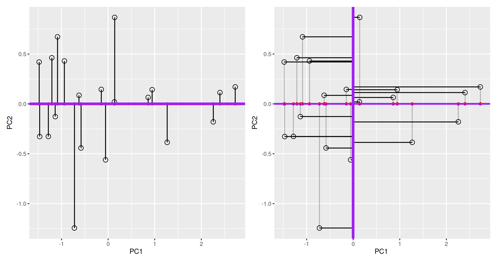
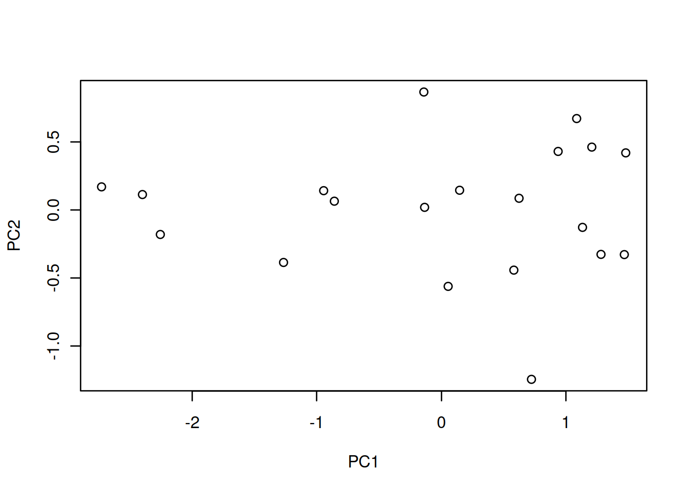
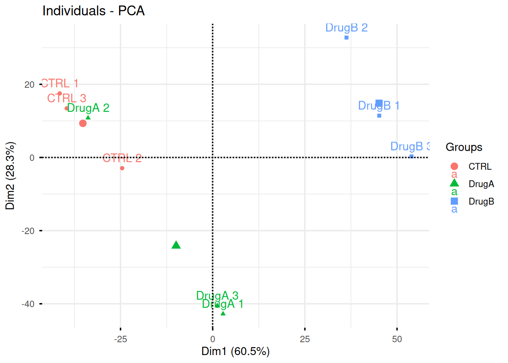
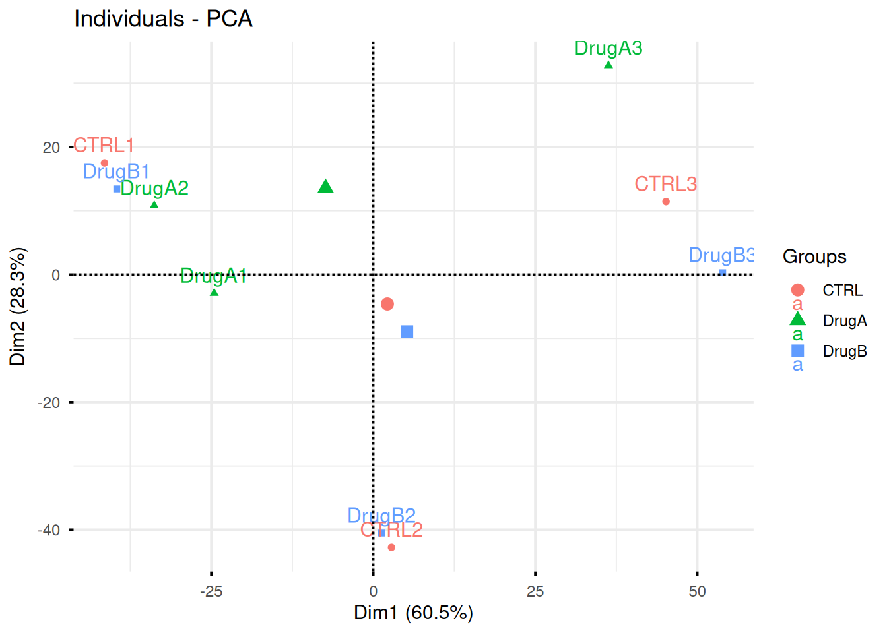
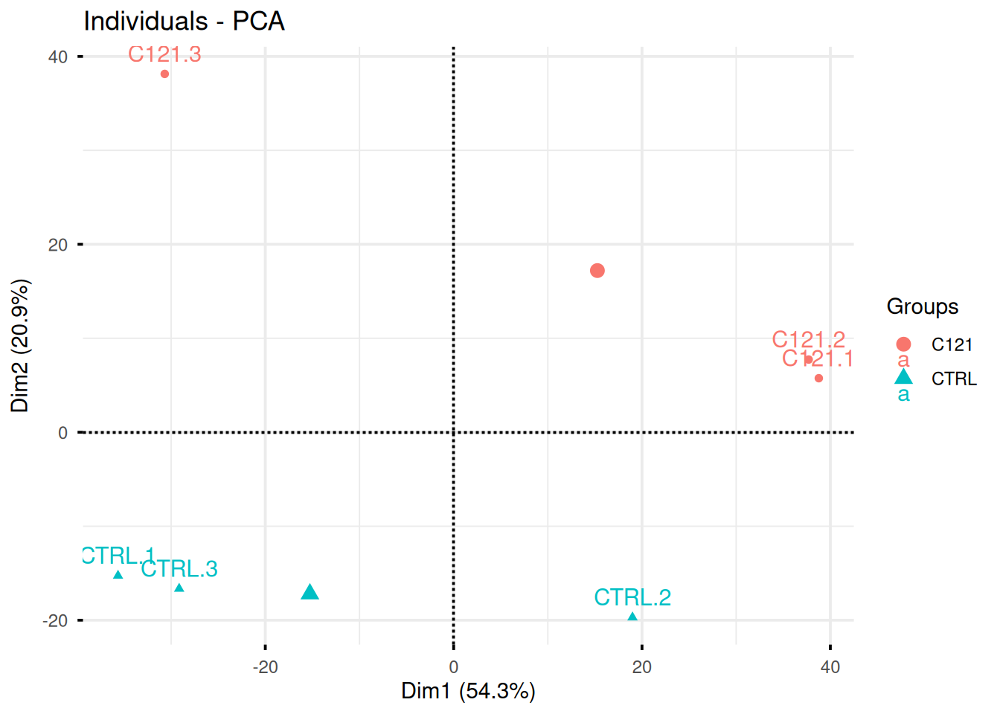
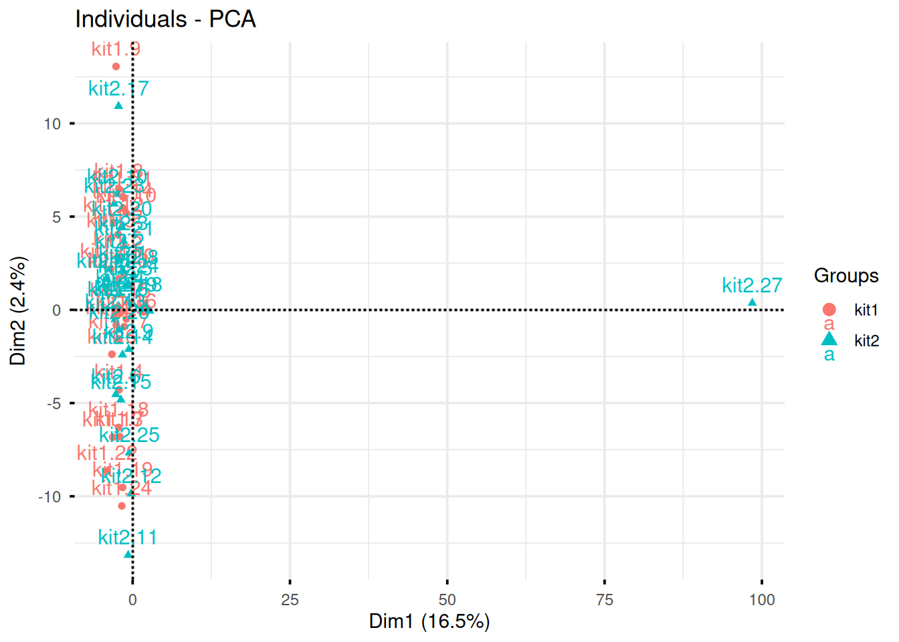

Chapter 8 Unsupervised learning: dimensionality reduction
In unsupervised learning (UML), no labels are provided, and the learning algorithm focuses solely on detecting structure in unlabelled input data. One generally differentiates between
- Clustering (see chapter 9), where the goal is to find homogeneous subgroups within the data; the grouping is based on similiarities (or distance) between observations. The result of a clustering algorithm is to group the observations (features) into distinct (generally non-overlapping) groups. These groups are, even of imperfect (i.e. ignoring intermediate states) are often very useful in interpretation and assessment of the data.
There is however one important caveat with clustering: clustering algorithms will always find clusters, even when none exists. It is thus essential to critically assess and validate (for example using existing domain knowledge) the results of any clustering algorithm.
- Dimensionality reduction (see chapter 8), where the goal is to summarise the data in a reduced number of dimensations, i.e. using a reduced number of (newly computer) variables. A typical example in omics is to summarise (and visualise) the relation between samples along two dimensions (which can easily be plotted) even if the data consists of tens of thousands of dimensions (genes). Dimensionality reduction is often used to facilitate visualisation of the data, as well as a pre-processing method before supervised learning.
UML presents specific challenges and benefits:
- Challenge: there is no single goal in UML
- Benefit: there is generally much more unlabelled data available than labelled data.
This chapter has as objectives to
- introduce dimensionality reduction techniques;
- provide the students with an understanding of what principal compoment analysis achieves;
- show how to perform a PCA analysis;
- provide real-life scenarios of PCA analyses on omics data.
8.1 Introduction
In this chapter, we are going to learn about dimensionality reduction, also called ordination. The goal of dimensionality reduction is to transform a high-dimensional data into data of lesser dimensions while minimising the loss of information.
Dimensionality reduction is used as a data transformation technique for input to other machine learning methods such as classifications, or as a very efficient visualisation technique, which is the use case we will focus on here. We are going to focus on a widerly used method called Principal Component Analysis (PCA).
We are going to use the following dataset to illustrate some important concepts related to PCA. The small dataset show below represents the measurement of genes x and y in 20 samples. We will be using the scaled and centred version of this dataset.
Figure 8.1: Raw (left) and scale/centred (right) expression data for genes x and y in 20 samples

8.2 Lower-dimensional projections
The goal of dimensionality reduction is to reduce the number of dimensions in a way that the new data remains useful. One way to reduce a 2-dimensional data is by projecting the data onto a lines. Below, we project our data on the x and y axes. These are called linear projections.
Figure 8.2: Projection of the data on the x (left) and y (right) axes.

In general, and in particular in the projections above, we lose information when reducing the number of dimensions (above, from 2 (plane) to 1 (line)). In the first example above (left), we lose all the measurements of gene y. In the second example (right), we lose all the measurements of gene x.
The goal of dimensionality reduction is to limit this loss.
We know already about linear regression. Below, we use the lm
function to regress y onto x (left) and x onto y
(right). These regression lines give us an approximate linear
relationship between the expression of genes x and y. The
relationship differs depending on which gene we choose to be the
predictor and the response.
Figure 8.3: Regression of y onto x (left) minimisises the sums of squares of vertical residuals (red). Regression of x onto y (right) minimisises the sums of squares of horizontal residuals (orange).

We now want a line that minimises distances in both directions, as shown below. This line, called principal component, is also the ones that maximises the variance of the projections along itself.
Figure 8.4: The first prinicpal component minimises the sum of squares of the orthogonal projections.

The second principal component is then chosen to be orthogonal to the first one. In our case above, there is only one possibility.
Figure 8.5: The second prinicpal component is orthogonal to the second one.
In the example above the variance, the variance along the PCs are 1.77 and 0.23 respectively. The first one explains 88.6% or that variance, and the second one merely 11.4%. This is also reflected in the different scales along the x and y axis.
To account for these differences in variation along the different PCs, it is better to represent a PCA plot as a rectangle, using an aspect ratio that is illustrative of the respective variances.
Figure 8.6: Final principal component analysis of the data.

8.3 The new linear combinations
Principal components are linear combinations of the variables that were originally measured, they provide a new coordinate system. The PC in the previous example is a linear combination of gene_x and gene_y:
\[ PC = c_{1} ~ gene_{x} + c_{2} ~ gene_{y} \]
It has coefficients \((c_1, c_2)\), also called loading.
PCA will find linear combinations of the original variables. These new linear combinations will maximise the variance of the data.
8.4 Summary and application
Principal Component Analysis (PCA) is a technique that transforms the original n-dimensional data into a new space.
These new dimensions are linear combinations of the original data, i.e. they are composed of proportions of the original variables.
Along these new dimensions, called principal components, the data expresses most of its variability along the first PC, then second, …
Principal components are orthogonal to each other, i.e. non-correlated.

Figure 8.7: Original data (left). PC1 will maximise the variability while minimising the residuals (centre). PC2 is orthogonal to PC1 (right).
In R, we can use the prcomp function. A summary of the prcomp
output shows that along PC1, we are able to retain close to 92%
of the total variability in the data.
## Importance of components:
## PC1 PC2
## Standard deviation 1.3308 0.4784
## Proportion of Variance 0.8856 0.1144
## Cumulative Proportion 0.8856 1.0000This pca_xy variable is an object of class prcomp. To learn what
it contains, we can look at its structure with str and read the
?prcomp manual page.
## List of 5
## $ sdev : num [1:2] 1.331 0.478
## $ rotation: num [1:2, 1:2] 0.707 0.707 -0.707 0.707
## ..- attr(*, "dimnames")=List of 2
## .. ..$ : chr [1:2] "gene_x" "gene_y"
## .. ..$ : chr [1:2] "PC1" "PC2"
## $ center : Named num [1:2] 4.05e-16 1.53e-17
## ..- attr(*, "names")= chr [1:2] "gene_x" "gene_y"
## $ scale : logi FALSE
## $ x : num [1:20, 1:2] -2.728 -2.4 -2.257 -0.945 -0.14 ...
## ..- attr(*, "dimnames")=List of 2
## .. ..$ : NULL
## .. ..$ : chr [1:2] "PC1" "PC2"
## - attr(*, "class")= chr "prcomp"We are going to focus on two elements:
- sdev contains the standard deviations along the respective PCs (as also displayed in the summary). From these, we can compute the variances, the percentages of variance explained by the individual PCs, and the cumulative variances.
## [1] 1.7711407 0.2288593## [1] 0.8855704 0.1144296## [1] 0.8855704 1.0000000- x contains the coordinates of the data along the PCs. These are the values we could use to produce the PCA plot as above by hand.
## PC1 PC2
## [1,] -2.72848772 0.17019003
## [2,] -2.40018291 0.11371158
## [3,] -2.25654153 -0.17987834
## [4,] -0.94491834 0.14224604
## [5,] -0.14044618 0.86760695
## [6,] -0.85917747 0.06485259
## [7,] -1.26714805 -0.38570171
## [8,] -0.13426336 0.01962124
## [9,] 0.14678704 0.14527416
## [10,] 1.08677349 0.67252884
## [11,] 0.93793985 0.43069778
## [12,] 0.62416628 0.08630825
## [13,] 0.05477564 -0.56143151
## [14,] 1.20838962 0.46257985
## [15,] 0.58230063 -0.44200381
## [16,] 1.48091889 0.42011071
## [17,] 1.13374563 -0.12764440
## [18,] 1.28218805 -0.32631519
## [19,] 1.46938699 -0.32768480
## [20,] 0.72379344 -1.24506826
8.5 Visualisation
A biplot features all original points re-mapped (rotated) along the first two PCs as well as the original features as vectors along the same PCs. Feature vectors that are in the same direction in PC space are also correlated in the original data space.
Figure 8.8: A biplot shows both the variables (arrows) and observations of the PCA analysis.

One important piece of information when using PCA is the proportion of variance explained along the PCs (see above), in particular when dealing with high dimensional data, as PC1 and PC2 (that are generally used for visualisation), might only account for an insufficient proportion of variance to be relevant on their own. This can be visualised on a screeplot, that can be produced with
Figure 8.9: Screeplot showing the variances for the PCs.
► Question
Repeat the analysis above with the xy0 data, that you can load
from the rWSBIM1322 data. First scale it, then repeat the PCA
analysis as shown above.
► Solution


► Question
Load the cptac_se_prot data, scale the data (see below for
why scaling is important), then perform the PCA analysis and interpret
it. Also produce a PCA for PCs 2 and 3.
► Solution


► Question
In the exercise above, the PCA was performed on the features (proteins). Transpose the data and produce a PCA of the samples. Interprete the figures.
► Solution
8.6 Pre-processing and missing values with PCA
We haven’t looked at other prcomp parameters, other that the first
one, x. There are two other ones that are or importance, in
particular in the light of the section on pre-processing above, which
are center and scale.. The former is set to TRUE by default,
while the second one is set the FALSE.
► Question
Perform a PCA analysis on the mtcars dataset with and without
scaling. Compare and interpret the results.
► Solution

Real datasets often come with missing values. In R, these should be
encoded using NA. Unfortunately, prcomp() cannot deal with missing
values, and observations containing NA values will be dropped
automatically. This is a viable solution only when the proportion of
missing values is low. Otherwise, it is possible to impute missing
values (which often requires great care) or use an implementation of
PCA such as non-linear iterative partial least squares (NIPALS),
that support missing values.
Finally, we should be careful when using categorical data in any of
the unsupervised methods. Categories are generally represented as
factors, which are encoded as integer levels, and might give the
impression that a distance between levels is a relevant measure (which
it is not, unless the factors are ordered). In such situations,
categorical data can be dropped, or it is possible to encode
categories as binary dummy variables. For example, if we have 3
categories, say A, B and C, we would create two dummy variables
to encode the categories as:
## x y
## A 1 0
## B 0 1
## C 0 0so that the distance between each category are approximately equal to 1.
8.7 The full PCA workflow
In this section, we will describe the detailed PCA analysis and
interpretation of two real-life proteomics datasets. Both of these
datasets are available in the pRolocdata package.
8.7.1 Extra-embryonic endoderm differentiation in mouse embryonic stem cells
We are first going to focus on the data from Mulvey et al. (2015), where they present the Dynamic proteomic profiling of extra-embryonic endoderm differentiation in mouse embryonic stem cells (Mulvey et al. 2015Mulvey, C M, C Schröter, L Gatto, D Dikicioglu, I Baris Fidaner, A Christoforou, M J Deery, et al. 2015. “Dynamic Proteomic Profiling of Extra-Embryonic Endoderm Differentiation in Mouse Embryonic Stem Cells.” Stem Cells, June. https://doi.org/10.1002/stem.2067.).
During mammalian preimplantation development, the cells of the blastocyst’s inner cell mass differentiate into the epiblast and primitive endoderm lineages, which give rise to the fetus and extra-embryonic tissues, respectively. Extra-embryonic endoderm (XEN) differentiation can be modeled in vitro by induced expression of GATA transcription factors in mouse embryonic stem cells. Here, we use this GATA-inducible system to quantitatively monitor the dynamics of global proteomic changes during the early stages of this differentiation event and also investigate the fully differentiated phenotype, as represented by embryo-derived XEN cells. Using mass spectrometry-based quantitative proteomic profiling with multivariate data analysis tools, we reproducibly quantified 2,336 proteins across three biological replicates and have identified clusters of proteins characterized by distinct, dynamic temporal abundance profiles. We first used this approach to highlight novel marker candidates of the pluripotent state and XEN differentiation. Through functional annotation enrichment analysis, we have shown that the downregulation of chromatin-modifying enzymes, the reorganization of membrane trafficking machinery, and the breakdown of cell-cell adhesion are successive steps of the extra-embryonic differentiation process. Thus, applying a range of sophisticated clustering approaches to a time-resolved proteomic dataset has allowed the elucidation of complex biological processes which characterize stem cell differentiation and could establish a general paradigm for the investigation of these processes.
► Question
Load the mulvey2015_se data from the pRolocdata package. The data
comes as an object of class SummarizedExperiment. Familiarise
yourself with its experimental design stored in the colData slot.
► Solution
Here, we will want to do a PCA analysis on the samples. We want to remap the
18 samples from a 2337-dimensional space into 2, or
possibly 3 dimensions. This will require to transpose the data matrix
before passing it to the prcomp function.
► Question
- Run a PCA analysis on the samples of the
mulvey2015_sedata and display a summary of the results.
► Solution
► Question
Assuming we are happy with a reduced space explaining 90% of the variance of the data, how many PCs do we need?
Visualise the variance captured by the 18 PCs. To do so, you can use the
fviz_screeplotfunction from thefactoextrapackage.
► Solution

► Question
Visualise your PCA analysis on a biplot. You can use the
fviz_pcafunction from thefactoextrapackage, or thefviz_pca_indfunction to focus on the individuals (the rows of the original input).Use the
habillageorcol.indarguments10 Thehabillageonly uses (or converts to) factors, and is this appropriate for categories. If the variable to be highlighted on the PCA plot is continuous, thencol.indshould be used. See?fviz_pca_indfor details. of thefviz_pca_ind()function to highlight the time experimental variable. Interpret the figures in the light of the experimental design.
► Solution
► Question
To visualise the data in 3 dimension, you can use the plot3d
function from the rgl package, that provides means to rotate the
cube along the three first PCs.
► Solution
8.7.2 A map of the mouse pluripotent stem cell spatial proteome
In this section, we are going to use PCA to explore spatial map of mouse pluripotent stem cell by Christoforou et al. (Christoforou et al. 2016Christoforou, A, C M Mulvey, L M Breckels, A Geladaki, T Hurrell, P C Hayward, T Naake, et al. 2016. “A Draft Map of the Mouse Pluripotent Stem Cell Spatial Proteome.” Nat Commun 7: 8992. https://doi.org/10.1038/ncomms9992.).
Knowledge of the subcellular distribution of proteins is vital for understanding cellular mechanisms. Capturing the subcellular proteome in a single experiment has proven challenging, with studies focusing on specific compartments or assigning proteins to subcellular niches with low resolution and/or accuracy. Here we introduce hyperLOPIT, a method that couples extensive fractionation, quantitative high-resolution accurate mass spectrometry with multivariate data analysis. We apply hyperLOPIT to a pluripotent stem cell population whose subcellular proteome has not been extensively studied. We provide localization data on over 5,000 proteins with unprecedented spatial resolution to reveal the organization of organelles, sub-organellar compartments, protein complexes, functional networks and steady-state dynamics of proteins and unexpected subcellular locations. The method paves the way for characterizing the impact of post-transcriptional and post-translational modification on protein location and studies involving proteome-level locational changes on cellular perturbation. An interactive open-source resource is presented that enables exploration of these data.
► Question
Load the hyperLOPIT2015_se data from the pRolocdata
package. Familiarise yourself with its experimental design and its
feature annotation stored in the rowData slot.
► Solution
Here, we will want to do a PCA analysis on the features. We want to
remap the 5032 proteins from a
20-dimensional space into 2, or
possibly 3 dimensions. Here, we can use the data as it when
passing it to the prcomp function.
► Question
- Run a PCA analysis on the features of the
hyperLOPIT2015_sedata and display a summary of the results.
► Solution
► Question
Assuming we are happy with a reduced space explaining 75% of the variance of the data, how many PCs do we need?
Visualise the variance captured by the 18 PCs. To do so, you can use the
fviz_screeplotfunction from thefactoextrapackage.
► Solution
► Question
Visualise your PCA analysis on a biplot. You can use the
fviz_pcafunction from thefactoextrapackage, or thefviz_pca_varfunction to focus on the variables (the columns of the original input).Interpret the variables on the biplot. Which ones are correlated? Is this to be expected in the light of the experimental design.
Use the
fviz_pca_indfunction to focus on the individuals (the rows of the orgininal input). Use thehabillageargument of thefviz_pca_indfunction to highlight sub-cellular locations of the proteins (use the"markers"feature variable) and set thegeomargument to"point"to drop the feature names from the plot (which correspond togeom = "text"). Interpret the figures in the light of the spatial proteomics experiment.Repeat the figure above setting the
"final.assignment"variable to annotate the plot. Compare and interpret the two plots.
► Solution
A short video (in French, with subtitles in multiple languages) summarises the solution for this spatial proteomics PCA application.
8.8 Additional exercises
► Question
Professor Simpson and her team wanted to test the effect of drug A and drug B on fibroblast. They measured gene expression using RNA-Seq in three conditions: a control without any drug, cells in presence of drug A, and cells in presence of drug B. Each of these were measured in triplicates in a single batch by the same operator.
The figure below shows the PCA plot of the 9 samples, coloured by condition. Interpreted the figure in the light of the experimentally design and suggest how to best analyse these data.
Figure 8.19: PCA analysis illustrating the global effect of drug A and B.

► Question
Consider the same experimental design as above, but with the PCA plot below. Interpret the figure in the light of the experimental design and suggest how to best analyse these data.
Figure 8.20: PCA analysis illustrating the global effect of drug A and B.

► Question
Researchers of the famous FLVIT (Fosse-La-Ville Institute of Technology) wanted to test the effect of a newly identified anti-cancer drug C121 on KEK293 cells. They measured proteins expression using quantitative mass spectrometry in these two conditions and 4 replicates. Each of these were measured in triplicates in a single batch.
Interpret the PCA plot in the light of the experimental design. Do you think the analysis is likely to provide significant results?
Figure 8.21: Quantitative proteomics experiment measuring the effect of drug C121.

► Question
In the following experimental design, clinicians have used quantitative PCR to measure the expression of 96 micro RNAs in the blood of three patients and three healthy donor, with the goal of identifying novel biomarkers.
In the light of the experimental design, interpret the PCA plot. What are the chances to find good biomarkers?
Figure 8.22: Quantitative proteomics experiment measuring the effect of drug C121.

► Question
The team of Professor Von der Brille have quantified the gene expression of Jurkat cells using two RNA-Seq protocols. 25 samples were tested with kit 1 by operator A and B (12 and 13 samples respectively), and 27 samples were processed with kit 2 by operators A and C (20 and 7 samples respectively).
In the light of the experimental design, interpret the PCA plot. What would you suggest to do before testing whether using kit 1 and 2 have an impact on the data?
Figure 8.23: Testing the effect of RNA sequencing kits 1 and 2.

► Question
Load the tdata1 dataset from the rWSBIM1322 package and run a PCA
analysis on the samples. Interpret the results, knowing that these
data are random.
► Question
Using the function kem2.tsv from the rWSBIM1207 package, import
the RNA-seq data and perform a PCA analysis on the samples.
► Question
Load the metab1 data from the rWSBIM1322 package (version >=
0.1.10) and perform a PCA analysis on the samples. These data
represent mass spectrometry-based metabolomics data. Do the samples
seem to be randomly placed? Do you notice any structure explained by
the labels?
Page built: 2024-12-09 using R version 4.4.1 (2024-06-14)